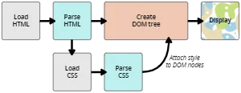

Cuando un navegador muestra un documento, ha de combinar el contenido con la información de estilo del documento. Procesa el documento en una serie de etapas, que enumeraremos a continuación. Ten en cuenta que este es un modelo muy simplificado de lo que sucede cuando un navegador carga una página web y que cada navegador gestiona el proceso de manera diferente. Pero esto es más o menos lo que sucede.
El navegador carga el HTML (por ejemplo, lo recibe de la red).
Convierte el HTML en un DOM (Modelo de objetos del documento). El DOM representa el documento en la memoria del ordenador. Lo explicaremos más detalladamente en la sección siguiente.
Entonces, el navegador va a buscar la mayor parte de los recursos vinculados al documento HTML, como las imágenes y los videos incrustados... ¡y también el CSS vinculado! JavaScript aparece un poco más adelante en el proceso, pero no vamos a hablar de ello aún para evitar complicar las cosas.
El navegador analiza el CSS y ordena en diferentes «cubos» las diferentes reglas según el tipo de selector. Por ejemplo, elemento, clase, ID, y así sucesivamente. Para cada tipo de selector que encuentre, calcula qué reglas deben aplicarse y a qué nodos en el DOM se les aplica el estilo según corresponda (este paso intermedio se llama árbol de renderización).
El árbol de renderización presenta la estructura en que los nodos deben aparecer después de aplicarle las reglas.
En la pantalla se muestra el aspecto visual de la página (esta etapa se llama pintura).
Un DOM tiene una estructura en forma de árbol. Cada elemento, atributo o bloque en el lenguaje de marcado se convierte en un nodo DOM con estructura de árbol. Los nodos se definen por su relación con otros nodos DOM. Algunos elementos son padres de nodos secundarios, y estos nodos hijos tienen hermanos. Comprender el DOM te ayuda a diseñar, depurar y mantener tu CSS porque en el DOM es donde tu CSS se encuentra con el contenido del documento. Cuando comiences a trabajar con las herramientas DevTools (o herramientas del desarrollador) del navegador, te moverás por el DOM mientras seleccionas elementos con el fin de ver qué reglas se aplican.
$ ssh-add --apple-use-keychain ~/.ssh/github-ibrahimlawal
$ ssh-add --apple-use-keychain ~/.ssh/github-ibrahimlawal-paystack
$ ssh-add --apple-use-keychain ~/.ssh/github-ibraheemweynodey
You only need the --apple-use-keychain option on a mac. More details on adding keys to the SSH agent here.
Import all the public keys on the corresponding GitHub accounts You can quickly copy each key to the clipboard with the commands below. After each copy, Visit here while logged in to the corresponding GitHub account; Click the ‘New SSH key’ button and paste the public key from clipboard.
Create GitHub host entries for all accounts The ~/.ssh/config file allows you specify a lot of config options for SSH. The commands below create the file if it doesn’t exist. And opens it in your default editing command… Likely TextEdit. $ open -e ~/.ssh/config Add these lines to the file, each block corresponding to each account you created earlier.
#ibrahimlawal account Host github.com-ibrahimlawal HostName github.com User git IdentityFile ~/.ssh/github-ibrahimlawal #ibrahimlawal-paystack account Host github.com-ibrahimlawal-paystack HostName github.com User git IdentityFile ~/.ssh/github-ibrahimlawal-paystack #ibraheemweynodey account Host github.com-ibraheemweynodey HostName github.com User git IdentityFile ~/.ssh/github-ibraheemweynodey